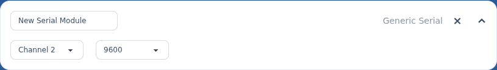

Other serial modules.
Besides the Maestro, AstrOs supports a few other serial devices. They all share the same simple setup — a name, a UART channel and a baud rate — and differ only in what they are:
- Human Cyborg Relations — an HCR sound & lighting board.
- Kangaroo X2 — a Dimension Engineering motion controller.
- Generic — any other serial device.
§Add one
On the Modules screen, expand the location whose node the device is wired to, select + on Serial Modules, choose its type (Human Cyborg Relations, Kangaroo X2 or Generic), then Add Module. Expand the new row to configure it.
§Settings

- Name — a label for the device, so you can tell it apart in scripts.
- UART channel — which of the node's serial channels it's wired to.
- Baud rate — the serial speed (
9600–115200). It must match the speed the device itself is set to.
✦
Driving servos?
Servos run through a Pololu Maestro, which has its own richer setup — these serial modules just open a serial link.
Back to Modules & hardware to finish this node, then Save and Sync.